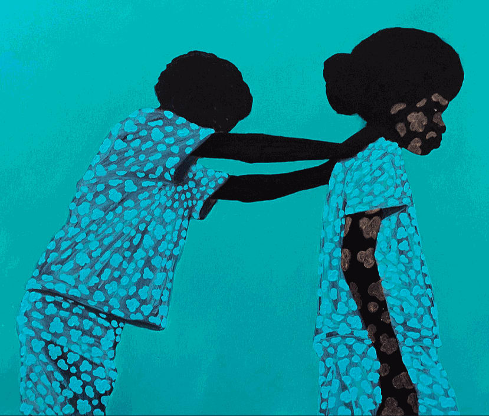
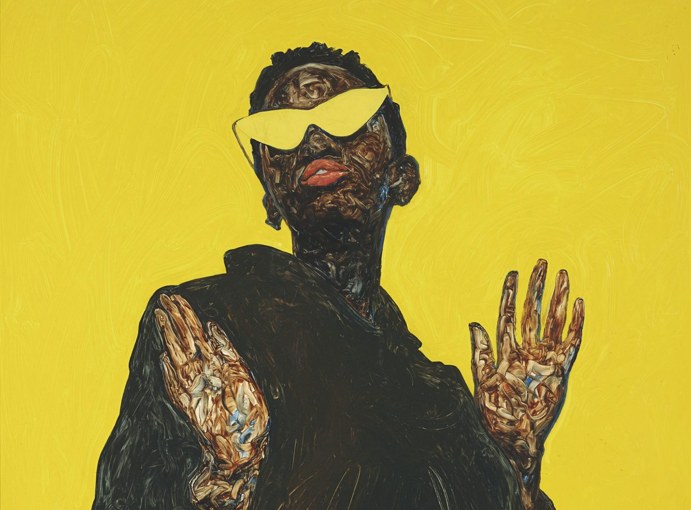
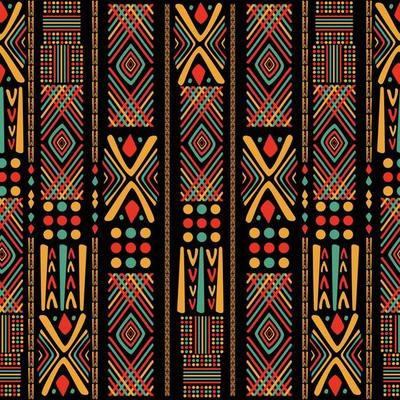
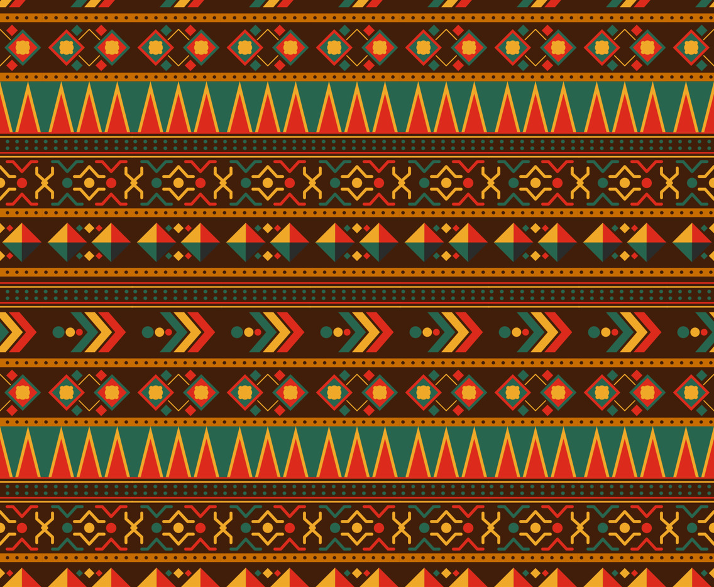
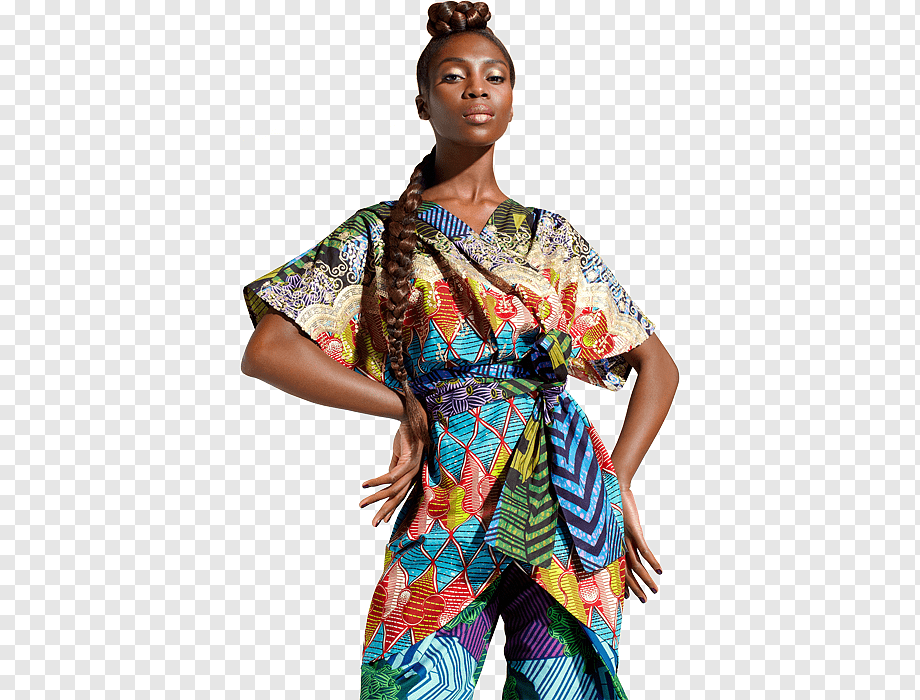

African art is a vibrant and diverse field with a wide range of styles, mediums and cultural influences. From ancient sculptures to contemporary paintings, African art offers a unique perspective on the continent's rich history and cultural heritage.
Traditional Sculptures & Masks
One of the most recognized forms of art.... These sculptures are often made of wood, stone or metal and are categorized by their stylized forms and symbolic meanings. Many African cultures create sculptures for religious or ceremonial purposes, with figure representing deities, ancestors or spirits.
Reflects the dynamic and evolving nature of modern African societies. Artists across the continent are exploring new techniques and themes, often blending traditional elements with modern influences


This genre of art frequently addresses social and political issues, offering commentary on topics such as identity, globalization, and post-colonialism. Artists like El Anatsui and Wangechi Mutu have gained international recognition for their innovative approaches,
using materials such as bottle caps and collage to create thought provoking works that challenge convectional perceptions of African art.
Fashion & Textiles
African textiles and fashion are integral to the continent's cultural expression, known for their bold colors, intricate patterns and unique designs.



Traditional textiles are like kente cloth, mud cloth, kitenge, ankara and kanga e.t.c
African fashion is awesome because it is not only clothing but also holds significant cultural and historical awe! African fashion has gained global attention because of creativity and innovation in the global fashion industry.